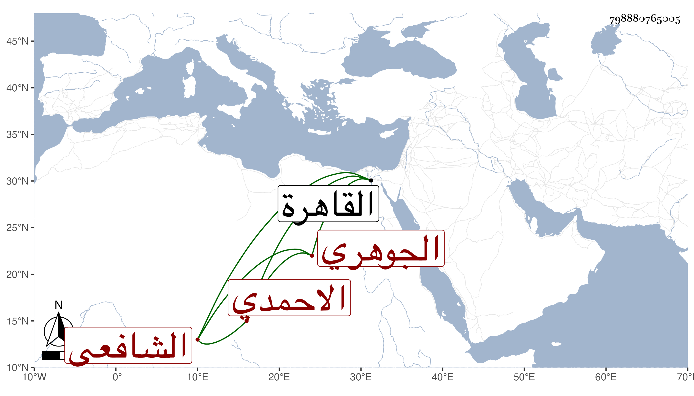

0902Sakhawi.DawLamic.ITO20230111-ara1.EIS1600.798880765005
Biography ID: 798880765005
274
محمد بن محمد بن عبد الرحمن بن يوسف الشمس أبو الفضل بن الشمس أبي عبد الله الجوهري بلدا الشافعي الاحمدي نزيل القاهرة والماضي أبوه والآتي ولده محمد ويعرف كسلفه بابن بطالة . ممن حفظ القرآن والتنبيه واشتغل ، وحج مرارا وجاور وابتنى الزاوية الشهيرة بقنطرة الموسكي وقرر مدرسها البرهان الابناسي الصغير وجعل بها فقراء ثم بطل ذلك وكان مكرما للوافدين . مات في سابع رمضان سنة إحدى وثلاثين وقد قارب الخمسين ودفن بالمقام الاحمدي رحمه الله وإيانا .
